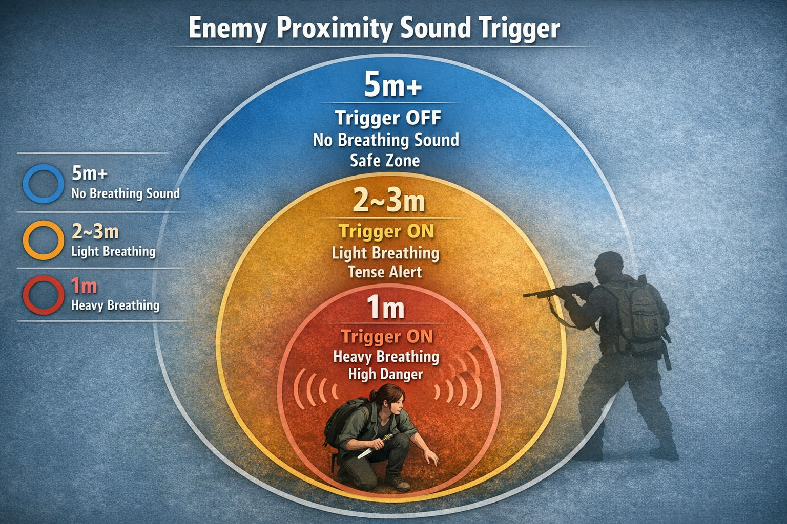

프로젝트 정보
- 폴리 사운드 녹음을 중심으로 게임 사운드 디자인 제작
- 실제 인게임 플레이를 하는 듯한 몰입감 구현
상황 설정
적들을 피해 달아난 주인공이 건물 내부에서 반격을 시작하는 구간
- 은신 → 추격 → 근접 전투로 이어지는 흐름
- 플레이어와 습격하는 적군과의 전투를 통해 생존을 하는 장면
앰비언스(AMB) 디자인
외부 환경
- 날씨
- 안개가 낀 새벽 → 아침으로 넘어가는 시간대
- 톤
- 차갑고 습한 공기감, 시야가 제한된 분위기
내부 환경
- 공간
- 울림이 있는 실내 건물
- 분위기 키워드
- Horror / Cinematic / Scary
실내 공간의 잔향과 저역 위주의 환경음을 활용해 긴장감이 쉽게 해소되지 않도록 설계했습니다.
긴장감과 무거운 공기를 만들기 위해 몇 가지 폴리 사운드를 이용해 분위기를 형성했습니다.
- 단소의 바람소리
- 풍선의 바람 빠지는 소리
- 기타 스트링 스크래치 사운드
캐릭터 사운드 설정
주인공
- 성격
- 과감한, 용기 있는 인물
- 보이스
- 17–19세 여성 / 중역대 / 분노와 긴장감이 섞인 톤
- Foley
- 가방, 셔츠, 청바지, 일반 운동화
- Weapon
- 활 & 화살 (일반 / 폭탄), 마체테(칼)
적군
- 유형
- 여성 / 건장한 남성 / 두껍고 힘 있는 남성 보이스
- Foley
- Jacket, Rain Suit, Bag, Shotgun Foley
- Weapon
- 활 & 화살, Hammer (Heavy Weapon)
UI 사운드 콘셉트
전통적인 UI 사운드 대신 사물의 실제 움직임을 활용한 UI 표현
- 사용 오브젝트
- Gear / Can / Trash / Foley Object
아이템 제작 UI 스케치
- 전구를 갈아 끼우는 소리
- 천으로 무언가를 감싸는 소리
- 낮은 피치 톤의 캔이 움직이는 소리
- 나뭇가지가 비비는 소리
실제 사물의 결합과 조합을 통해 제작 행위가 손에 잡히는 듯한 촉각적 사운드를 구현했습니다.
거리 기반 트리거 사운드 시스템
적과의 거리 변화에 따라 주인공의 숨소리가 단계적으로 변화하는 구조
- 시각적 HUD 없이 위험도를 인지하도록 설계
- 플레이어의 심리 상태를 직접적으로 자극

적과의 거리에 따른 숨소리 트리거 단계- 5m 이상
- 숨소리 비활성화 · 상대적으로 안전한 구간
- 2–3m
- 약한 숨가쁨 트리거 ON · 긴장 경계 단계
- 1m 이내
- 거친 숨가쁨 트리거 ON · 발각 직전의 극도의 압박감
특히 1m 이내에서는 숨소리를 의도적으로 거칠게 만들어 ‘지금 움직이면 들킬 수 있다’는 감각을 사운드로 전달하는 것을 목표로 했습니다.
사운드 팔레트 (사용 기기: PCM-A10)
Bow Loading & Arrow Sound
- 종이로 포장된 나무젓가락을 비틀어 활시위 텐션 표현
- 가공된 나무젓가락을 서로 비벼 당김 동작 표현
Footstep – Grass
- 봉투 안에 동전을 넣어 잔디의 밟힘 질감 표현
- EQ로 1k–20k 고역 제거 → 금속성 제거
- Pitch -1 + Reverb 적용 → 이미지에 어울리는 질감 완성
주인공 성우 디렉팅
성우를 직접 섭외한 이유
캐릭터성을 부여해 극한의 몰입감을 줄 수 있게 만들기 위한 목적이 컸습니다.
특히 The Last of Us Part II에서는 캐릭터의 숨소리, 인기척, 대사 같은 부분들을 통해 긴장감을 불어넣을 수 있도록 해봤습니다.
앨리 성우 캐스팅 기준
- 전투적으로 남성적으로 거친 느낌의 캐릭터
- 현재 부상을 당한 상태이고 적군의 시야에서 몰래 이동을 하는 상황
- 극도의 긴장 상태 / 스트레스를 엄청 받고 있는 상황
- 비전투 상황일 땐 조용히 몰래 속삭이듯이 말을 하고, 전투 시에는 강렬한 음성으로 거친 움직임을 표현
숨소리 트리거
적군에게 가까이 다가갈수록 더 거친 숨소리를 연출했습니다. 이동할 때에도 자주는 아니지만 숨소리를 넣어 표현했습니다. (거리 단계는 위 트리거 시스템과 같습니다.)
장면별 연기 디렉션
성우님께 전달한 장면별 디렉션입니다. 비슷한 느낌으로 성우님이 수정해 진행해도 된다고 열어 두었습니다. 시간을 누르면 영상의 그 장면부터 재생됩니다.
- 박힌 화살을 빼는 장면. 빼기 직전까지 고통이 점점 심해지는 표현 (고조되듯 크으윽… 흐읏!!) → 뺀 뒤에는 고통이 남은 느낌으로 2초 정도 거친 숨소리
- “들키지 않게 조심해야겠어…” (조심스러운 목소리로)
- 화살을 뽑을 때 힘을 주는 표현 — 입을 다문 상태로 흐읏… 하! 하면서 힘을 준다는 느낌
- “이걸로 처리하면 되겠어…”
- “젠장할…”
- 한숨을 고르고 출발하는 장면 — 코로 크게 들이마셨다가 짧게 후! 내뱉으며 전투 시작
- 달려가는 장면은 거친 숨소리, 칼로 내려찍을 때 악에 받친 목소리로 흐으아!!
- 당황한 목소리로 피하는 느낌
- 주인공의 공격 모션 보이스 — 1타 하! / 2타 약간 작게 흐..! / 3타 무기를 부딪히고 긁을 때 힘을 주는 크으으윽…!!
- 목을 졸릴 때 커억!
- 커헉…! 바닥에 던져졌을 때 크윽… 으윽… 신음 (1분 25초 – 30초는 참고 영상의 음성과 비슷하거나 더 과장되게)
- 놀라는 목소리 — 숨을 들이마시듯 허업!
- 달려가는 모션 — 거친 숨소리로 이동
- 이를 악문 상태로 으읏!! 으아! 하며 움직임 표현 → 1분 39초 적군을 내려칠 때 “죽…어!!!”
- 화살을 주울 때 지친 상태를 표현하는 거친 숨소리
- 맞는 장면 — 아픔을 표현하는 으헉…!
- 활을 세 번 쏘며 단계별로 감정 고조 — 1타 “죽어..!” / 2타 “제발…” / 3타 “죽으란 말이야!” (완전 고조) → 이후 지친 상태로 숨을 내쉬며 걸어감
- 적군을 내리치려 할 때 화난 감정을 담아 “닥쳐!!”
- 칼로 내려칠 때 흐아!!
- 아웃트로 전까지 공황이 온 듯한 숨소리 + 약간 추운 듯한 떨림이 있는 숨소리
기획 의도 요약
- 이 사운드 디자인은 사운드를 정보 전달 수단이자 심리 연출 도구로 사용하는 데 목적이 있습니다.
- 거리 기반 숨소리, 실제 오브젝트 기반 Foley, 공간감을 살린 Ambience를 통해 플레이어가 화면을 보지 않아도 상황을 느낄 수 있도록 설계했습니다.
마무리
결국 이 프로젝트의 목표는 원작이 가진 긴박하고 압도적인 전투 감각을 사운드로 구현하는 것이었습니다. 동시에, 보이스와 사운드를 중심으로 한 한 편의 영화 장면처럼 접근하고자 했습니다.
실제 게임 플레이 사운드와 시네마틱한 보이스 연출을 결합해 게임과 영화의 경계를 흐리는 것을 목표로 했습니다. 시청자가 단순히 장면을 보는 것이 아니라, 직접 게임을 플레이하고 있는 것처럼 느끼게 만드는 것이 핵심이었습니다.
이 작업은 사운드를 게임 시스템이자 스토리텔링 도구로 바라보는 저의 사운드 디자인 접근 방식을 담고 있습니다. 들어주셔서 감사합니다.